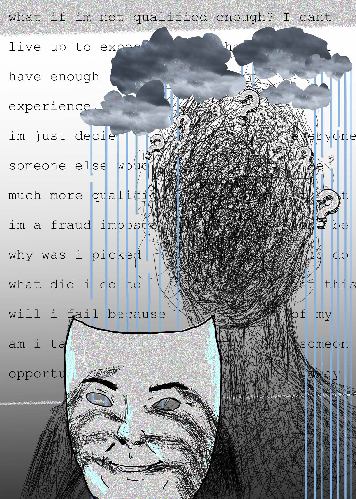

For my final project, I wanted to create a portrait which represented imposter syndrome. Imposter syndrome is when a person doubts their abilities, experiences, education, and achievements.
I created this portrait by using photoshop to draw out my images and create a collage of symbols which represent anxiety. I also added text in the background of what can possible go through one's mind as they experience imposter syndrome. Finally I drew a mask to represent someone masking their fear and doubt.
After I finished my portrait I used Audacity to glitch my image to further show the corruption of the mind as someone experiences imposter syndrome.
Echo Glitch
Change Speed Glitch

Wah Wah Glitch